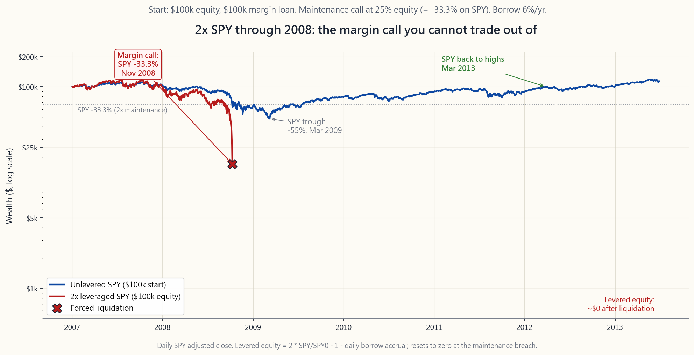
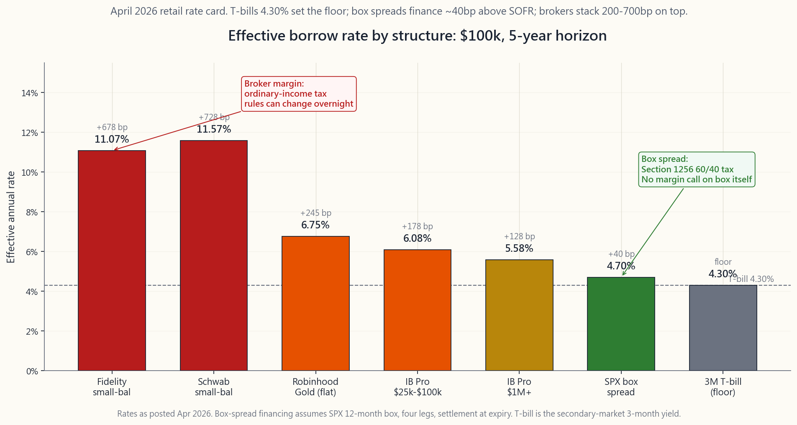

Side Lesson 21: Margin and Leverage — Reg T, Portfolio Margin, and How Not to Blow Up
1. Why This Is Important
Leverage is the single fastest way to convert a correct view into a permanent loss. Get the direction right, get the size right, get the financing right, and leverage rewards you. Get any one of those three wrong on a long enough horizon and you stop being a participant in the market — the margin clerk participates for you, on terms you do not control.
This lesson is not a sales pitch for margin. It is a working manual for the margin system you will encounter the moment you sign a brokerage agreement, plus the math that explains why "responsible leverage" is a lot harder than the brochures suggest.
Schwab, Fidelity, Interactive Brokers, ETrade, Robinhood — when you open a standard account, you are signing a margin agreement unless you specifically request a cash account. That signature gives the broker the right to lend your shares to short sellers, to liquidate your positions without your consent, and to change the rules at any time. You should know what you signed.
long-only.** A 100% equity investor who froze in March 2009 was underwater for ~12 months and back to all-time highs by Mar 2013. A 2x levered S&P 500 investor with the same conviction got margin-called below SPX 800 and never participated in the recovery. The story repeats every cycle. The market can stay irrational longer than you can stay solvent.
widely advertised as the cheapest, charges roughly 6.6% on the first $100k in April 2026 and only drops to ~5.4% above $1M. Fidelity and Schwab are 11-13% on small balances. The "cheap leverage" story is a large-account story. On a $50k account, a 2x portfolio costs 6.6% on the second $50k — about $3,300 a year, or 6.6% drag on equity, before you have made a single trade.
spreads finance at the SOFR + 30-50bp range, ~150 bp below the broker's small-account margin desk. Portfolio margin replaces the crude Reg T 50% rule with a stress test that gives spread traders 3-5x more buying power on the same capital. Both tools require reading the manual; both reward investors who do.
The honest framing is simple: vol-tail-wags-dog. Leverage does not change your average return very much; it changes the shape of the distribution — fattening the left tail until a 3-sigma event becomes terminal. Use it consciously or do not use it at all.
2. What You Need to Know
2.1 The Two Account Types and What You Sign Away
Every retail broker offers two account types. Most people pick the default without reading the difference.
Cash account. You can buy what your settled cash will cover. You cannot short, you cannot trade options beyond cash-secured puts and covered calls, and you face the T+1 settlement rule (changed from T+2 in May 2024). No margin call ever happens — the worst case is that your stocks go to zero and you have lost what you put in.
Margin account. You can borrow up to 50% of the purchase price of marginable securities (Reg T initial requirement), short stock, trade options of all kinds, and use spread strategies that require short legs. In exchange you grant the broker, via the margin agreement, three powers most retail clients never read carefully:
short sellers. You do not get the lending revenue (the broker keeps it). Dividends arrive as "payments in lieu" — taxed as ordinary income, not as qualified dividends. That tax mismatch matters.
broker may sell any position in any size at any price without your consent and without notice. Most agreements explicitly waive the requirement to call you first.
requirements on any security at any time. In a fast-moving market this often happens after the market has fallen — the stocks that just dropped 30% are precisely the ones the broker marks "100% margin required" overnight, forcing additional sales when prices are already low.
If you do not need the leverage, the short-selling, or the option strategies, the cash account is the structurally safer choice. Most investors are surprised to learn they have a margin account at all until the day it matters.
2.2 Regulation T — The 50/25 Rule
Federal Reserve Regulation T, in force since 1934, governs initial margin on US-listed equities. The number is 50%: when you open a new long position, you must put up at least half the purchase price in equity. The other half is the broker's loan.
| Item | Amount |
|---|---|
| Stock purchase | $100,000 |
| Reg T initial margin (50%) | $50,000 of your equity |
| Margin loan | $50,000 |
| Initial leverage | 2.0x |
| Initial equity % | 50% |
FINRA Rule 4210 sets the maintenance margin: equity must remain at least 25% of the position value. Below that, you get a margin call.
The arithmetic of when the call triggers is worth memorising. For a single-name long position bought 2x at price $P_0$, the maintenance threshold is the price $P_M$ at which equity has fallen to 25% of position value:
$$ P_M = P_0 \cdot \frac{1 - 0.50}{1 - 0.25} = P_0 \cdot 0.667 $$
Translation: a 2x long position takes a margin call after a **33.3% decline** in the underlying. The 2008 S&P fell 56.8% peak-to-trough. The 2020 COVID drop hit -33.9% in 23 trading days. The 2022 NDX drop hit -35%. Every recent significant drawdown has crossed the 2x maintenance threshold.
Most brokers impose house requirements stricter than FINRA's 25% floor — typically 30-35% on individual stocks, 50% or 100% on volatile names, and 100% (no margin) on stocks under $5 or after they have just dropped sharply. The house rule almost always triggers the margin call before the regulatory minimum does.
2.3 The Margin Call Mechanic — Forced Selling at the Worst Time
A margin call is not a phone call. It is an automated notice (email or app push) saying you have N business days — usually 2 to 4 — to either deposit cash, deposit marginable securities, or close positions to bring equity back above the maintenance threshold.
If you do not act, the broker acts for you. The order is:
the broker just marked "house special" overnight.
auction when liquidity is worst and spreads are widest. Your fill price is whatever clears at that moment, not the print you see on the chart.
The economics of forced liquidation are catastrophic in two ways. First, you sell at the bottom by definition — the call only fires because prices have already fallen. Second, you eliminate the recovery: the shares the broker liquidates are not yours to ride back up. The 2008 S&P 500 round-trip was -57% then +400% in 13 years; the levered investor who got called at -33% participated in the loss but not the recovery.
The 2022 crypto-margin liquidation cascade is the modern textbook example. Celsius, Voyager, BlockFi, and 3AC ran roughly 3-5x leverage on stablecoin loans collateralised by ETH and BTC. As ETH fell from $4,800 in November 2021 to $880 in June 2022, each maintenance call triggered automated liquidations into a thinning order book, which fell further, which triggered the next call. ETH margin debt at the institutional level went from ~$28 billion to under $4 billion in eight weeks. None of it would have failed if the participants had been unlevered. Vol-tail-wags-dog.

2.4 Portfolio Margin — The Stress-Test Alternative
Portfolio margin (PM) replaces Reg T's flat 50/25 rule with a risk-based calculation. The broker stress-tests your full portfolio against a set of standardised scenarios — typically a +/-15% move on the broad market with +/-3% interest rate and +/-9% volatility shocks — and requires equity equal to the worst-case loss in that grid.
For a long-only equity portfolio, PM does not help much: the worst case is "down 15%," and a 15% requirement means ~6.7x leverage which most investors should not use. Where PM transforms the math is defined-risk option positions:
- An iron condor on SPX with $50 wing width has a maximum loss of
- A short straddle on a stock with a defined hedge has a stress
- A long-stock + short-call (covered call) plus a long-put
The cost of admission is real: PM requires a $100k minimum equity, options-trading approval at the appropriate level, and a brokerage that supports it (Interactive Brokers, TastyTrade, TD Ameritrade legacy, Schwab pro). It also requires understanding the stress test — if you concentrate the portfolio in a single name, PM correctly identifies the concentration risk and demands more, not less, margin than Reg T would.
PM is the right tool for the spread trader who runs a defined-risk options book. It is the wrong tool for the leveraged stock buyer who just wants to control more shares. Match the structure to the strategy, not the slogan.
2.5 Broker Borrow Rates — The Cost That Kills the Carry
The advertised low margin rates are for large balances. Here is the April 2026 retail picture for the standard "buy stock on margin" borrow:
| Broker | $25k loan | $100k loan | $1M loan |
|---|---|---|---|
| Interactive Brokers (Pro) | 6.58% | 6.08% | 5.58% |
| Fidelity | 12.575% | 11.075% | 8.575% |
| Schwab | 12.575% | 11.575% | 9.075% |
| Robinhood Gold | 6.75% | 6.75% | 6.75% |
| ETrade | 13.20% | 11.70% | 8.45% |
Reference: Fed funds 4.25-4.50%, 3M T-bill ~4.30%.
Two facts jump off the table.
First: the spread above T-bills. Even Interactive Brokers charges T-bills + 175-225 bp on small balances. Fidelity and Schwab charge T-bills + 700-800 bp. The broker is not lending you money; the broker is using your shares as collateral to borrow at SOFR and re-lending the same money to you at SOFR + 5%. You are paying the spread.
**Second: there is no historical-return-based case for retail 2x.** Damodaran's 1928-2024 series shows the S&P 500 averaging 9.9% nominal CAGR. A naive 2x is 19.8% — minus borrow on the second 100%. At Interactive Brokers small-balance rates that is 19.8 - 6.6 = 13.2%, plus another -1 to -2% for vol drag. At Fidelity small-balance rates it is 19.8 - 11 = 8.8%, worse than unlevered. The "leverage long-term equities" trade does not work at retail prices.
For investors with the size to qualify, the cheaper alternatives are real:
- SPX box spread financing on Interactive Brokers / TastyTrade
- Treasury repo / box of T-bills for institutional accounts.
- Futures on indexes (week 39). /MES at $5/pt, $26k notional,

2.6 The Leverage Doesn't Add Long-Term Return Argument
Here is the calculation that should kill most leveraged-equity sales pitches.
Let $\mu$ be the unlevered arithmetic return on equities, $\sigma$ the unlevered volatility, $b$ the borrow cost, and $L$ the leverage. The geometric return on the levered position is:
$$ g_L \approx L \mu - (L-1) b - \tfrac{1}{2} L^2 \sigma^2 $$
Plug in $\mu = 9.9\%$, $\sigma = 16\%$, $b = 6\%$ (IB small balance):
- $L = 1$: $g = 9.9 - 0 - 0.5 \cdot 1 \cdot 0.0256 = 8.6\%$
- $L = 1.5$: $g = 14.85 - 3 - 0.5 \cdot 2.25 \cdot 0.0256 = 8.97\%$
- $L = 2$: $g = 19.8 - 6 - 0.5 \cdot 4 \cdot 0.0256 = 8.68\%$
- $L = 3$: $g = 29.7 - 12 - 0.5 \cdot 9 \cdot 0.0256 = 6.35\%$
Where the equation flips is when borrow drops below the equity risk premium. At $b = 4\%$ (box spread, large balance, or futures-implied), $L = 1.5$ delivers ~9.7% — modestly better than unlevered, with proportionally more risk. At $b = 8\%$ (Robinhood Gold or Fidelity small balance), even $L = 1.25$ is worse than $L = 1$.
The conclusion is not "never lever." The conclusion is: **leverage is an alpha source for institutions with cheap financing and a real edge; it is a beta amplifier for retail with broker-rate financing and no edge.** Alpha is rare; cheap leverage on no edge just rents you variance.
2.7 Sizing Rules When You Decide to Use Margin
If after all of the above you still want leverage in your toolkit, the sizing rules are non-negotiable.
2x book, that means a 30% market drop costs you 60% of equity plus borrow drag. You should be able to cover that loss psychologically and financially. Most retail investors cannot. Cap at 1.25x to 1.5x if you are honest about your behaviour.
trade can use broker margin (the rate * 0.25 year is small). A 5-year structural lever should use a box spread or futures-implied financing, not the broker's 11% small-balance margin rate.
Keep 5-10% of the levered notional in T-bills outside the margin account. When the call comes — and it will — that cash is the difference between you choosing what to sell and the broker choosing for you.
entry.** Markets compound; your equity moves. A 1.5x position that is up 30% is now 1.31x. A 1.5x position that is down 20% is now 1.875x. Re-mark and re-size.
annually.** Brokers change house requirements, securities- lending terms, and forced-liquidation policies. The version you signed in 2018 is not the version that will close your position in 2028. Read the current one.
The interactive lab below lets you tune account size, leverage, market move, and borrow rate, and shows the resulting equity, the distance to the call, and the after-cost annualised return in real time. Run a few scenarios where the move is negative — that is where the lessons live.
3. Common Misconceptions
**Misconception 1: "I have a cash account because I never use margin."** Most retail brokers open standard margin accounts by default. You have to specifically request a cash account. Your broker can lend your shares right now if you have not opted out.
Misconception 2: "Margin calls give me time to react." The agreement says 2-4 business days. The reality is that brokers can liquidate immediately if equity falls below the house threshold, which is typically tighter than the regulatory threshold. In March 2020, automated liquidation engines fired within hours, not days, on volatile names.
Misconception 3: "Portfolio margin is just more leverage." PM is more leverage for defined-risk option books. For a long-only stock portfolio, PM offers ~6.7x maximum, which no sensible investor should use. PM is a structure-aware capital tool, not a leverage upgrade.
**Misconception 4: "2x ETFs (SSO, QLD) are the same as 2x on margin."** They are not. 2x ETFs reset daily, which produces volatility decay over time (week 37). On a smooth uptrend they roughly track 2x; on choppy markets they underperform 2x by 1-3% per year. Margin tracks the underlying linearly until the call.
Misconception 5: "Box spreads are exotic and risky." A box spread is four SPX options legs that net to a defined loan with a known maturity and zero credit risk to the lender. It is the most plain-vanilla financing in the listed-options market. The "exotic" label is a marketing fiction protecting broker margin revenue.
**Misconception 6: "I'll just stop out before the margin call hits."** In a fast tape — March 2020, August 2024 yen-carry unwind, individual-name earnings gaps — the gap between your stop and the next print can exceed the 33% threshold. Stops are not guaranteed; margin calls are.
**Misconception 7: "My broker won't margin-call me — I have a relationship."** The margin clerk does not have a relationship. The clerk has a queue of accounts below the threshold and a liquidation algorithm. The "relationship" account, if it exists at all, is for the very few prime-brokerage clients with $50M+; it does not exist for the retail tier.
**Misconception 8: "Borrow rates are about prevailing interest rates."** Borrow rates are about spreads the broker chooses to charge above their own funding cost. Fidelity's small-balance margin rate moves up much faster when SOFR rises than it moves down when SOFR falls. The spread is policy, not math.
**Misconception 9: "Leveraged ETFs are safer than margin because there's no margin call."** True that there is no margin call — but a 2x ETF can decay to zero through volatility drag without the underlying ever going to zero (TVIX, VXX). Different failure mode, equally permanent loss.
**Misconception 10: "Long-term backtests show 2x equities beat 1x."** They do — if you ignore borrow costs, ignore the path risk through 1929, 1973, 2000, 2008, 2020, and assume you would have rebalanced every day. Real-world 2x with broker financing, real path risk, and real human behaviour underperforms 1x on ~70% of historical 30-year windows.
4. Q&A Section
**Q1: What is the difference between Reg T and FINRA maintenance margin?**
Reg T is the initial requirement set by the Federal Reserve: 50% equity to open a long position, 150% for a short. FINRA Rule 4210 is the maintenance requirement set by the self-regulatory organisation: 25% equity to keep a long position, 30% for a short. Reg T governs entry; FINRA governs continued holding. Brokers may apply stricter house rules on top of either.
Q2: Can the broker lend my shares without my permission?
In a margin account, yes — the margin agreement explicitly authorises securities lending. In a cash account, generally no (some brokers offer opt-in fully-paid lending programs that pay you a portion of the lending revenue). If you do not want your shares loaned, use a cash account or opt out where available.
Q3: How fast can a margin call happen?
In a slow-moving market: 2-4 business days notice before forced liquidation. In a fast-moving market or on a volatile single name: minutes to hours, especially under house intra-day margin rules that some brokers enforce. The agreement reserves the right to act without notice in any case.
**Q4: What happens to my margin loan if the broker goes bankrupt?**
SIPC protects up to $500k of securities (including $250k cash) in a brokerage failure, but the margin loan itself is a senior claim against your collateral. If the broker fails, your account is typically transferred to a successor broker with the loan intact. The broker's other creditors do not get your shares; the SIPC trustee unwinds the loan against your collateral as part of the transfer.
**Q5: Does margin interest qualify as deductible investment interest expense?**
For US taxpayers who itemise: investment interest expense is deductible against investment income (qualified dividends taxed at LTCG rates and net long-term gains can be elected in, but generally the deductible offsets ordinary investment income only). Most retail investors take the standard deduction and get no tax benefit from margin interest. Box spreads, by contrast, are Section 1256 and the financing cost is embedded in 60/40 LTCG treatment — a structurally better tax outcome on the same trade. The tax-wrapper edge here is real.
**Q6: What is portfolio margin, in one sentence, for someone who has never traded options?**
PM replaces the broker's flat 50/25 percentage rule with a stress-test on your whole portfolio that gives you more buying power if your positions hedge each other and less buying power if they concentrate risk. It is built for option spread traders and is unhelpful for plain stock buyers.
**Q7: Should I get a margin account just to short stocks occasionally?**
If "occasionally" means once or twice a year on a single name, options puts are the better tool — defined risk, no margin call, and depending on structure, Section 1256 or LTCG tax treatment. Margin shorting is for traders who short systematically and need the linear payoff and the rebate on hard-to-borrow names.
Q8: Is Robinhood Gold's flat 6.75% a good deal?
Compared to Fidelity small-balance (11%) yes; compared to Interactive Brokers Pro (5.5-6.5%) no. The flat structure means small accounts get a better deal than tiered brokers and large accounts get a worse one. Crossover is around $250k of borrow.
Q9: Why does my 2x ETF underperform when the S&P is flat?
Because 2x ETFs reset their leverage every day. In an up-down-up sequence the underlying ends flat but the ETF compounds 2 * return - return^2 each day, which has a negative-sigma-squared term that accumulates. Choppy markets eat 1-3% per year of 2x ETF performance even when the underlying is fine. Week 37 covers this in detail.
**Q10: What is the realistic maximum leverage for a retail investor who actually wants to come out ahead?**
For most: 1.0x. For an investor with a documented edge, IB Pro financing, the discipline to remark weekly, and the cash reserves to cover a 30% drawdown: 1.25x to 1.5x as a structural position. Above 1.5x is institutional territory and almost always destroys retail accounts on a 10-year horizon. Irrational markets plus fat-tailed vol combine to make leverage the dominant cause of permanent capital loss in retail.
**Q11: What is the safest way to use leverage if I am set on using some?**
Section 1256 instruments: index futures (week 39), SPX box spreads, and SPX options. Borrow is implicit in the basis or the box, sized to be 50-150bp above SOFR rather than 200-700bp above. Tax is 60/40 not ordinary. There is no margin call on the underlying position when you box-spread-finance — the box itself is fully cash-settled at maturity.
Q12: Did anyone use leverage successfully through 2008?
Yes — managed-futures CTAs that were long volatility via trend following on inverse positions (week 51). They had the right direction, the right size relative to vol, and the right financing. The vast majority of long-equity leveraged accounts did not survive in their original form. The lesson is not "no leverage"; the lesson is "the kind of leverage that survives the tail is not the kind being sold to you." Barbell sizing matters.
附加課 21：保證金與槓桿——Reg T、組合保證金，以及如何避免爆倉
1. 為何此課題至關重要
槓桿是將正確判斷轉化為永久虧損的最快途徑。方向對了、倉位大小對了、融資成本對了，槓桿才能回報你。若三者之中任何一個在足夠長的時間線上出錯，你將不再是市場的參與者——保證金部門會代你參與，而且是在你無法控制的條件下進行。
本課並非為保證金做宣傳，而是一本工作手冊，涵蓋你一旦簽署券商協議便會遇到的保證金制度，以及解釋「負責任的槓桿」為何比宣傳冊所示困難得多的數學原理。
坦白說：波動性的尾部主宰全局。槓桿不會顯著改變你的平均回報，它改變的是分佈的形狀——令左尾越來越肥，直至3倍標準差的事件變得致命。有意識地使用槓桿，或者根本不要使用。
2. 你需要掌握的知識
2.1 兩種帳戶類型及你所放棄的權利
每家零售券商均提供兩種帳戶類型。大多數人未閱讀差異便選擇了預設選項。
現金帳戶。 你只能動用已交收的現金買入股票。你不能沽空、不能買賣備兌認購期權和現金擔保認沽期權以外的期權，且須遵守T+1交收規則（已於2024年5月由T+2改為T+1）。追繳保證金的情況永遠不會發生——最壞的情況是股票歸零，你損失的只是投入的本金。
保證金帳戶。 你可借入可融資證券購買價格的最多50%（Reg T初始要求）、沽空股票、買賣各類期權，以及使用需要短倉腳的價差策略。作為交換，你通過保證金協議授予券商三項大多數零售客戶從未仔細閱讀的權力：
若你不需要槓桿、沽空或期權策略，現金帳戶在結構上是更安全的選擇。大多數投資者驚訝地發現，直到事情真正發生時，才意識到自己一直持有的是保證金帳戶。
2.2 Regulation T——50/25規則
自1934年起生效的聯邦儲備局Regulation T，規管美國上市股票的初始保證金。數字是50%：當你建立新的長倉時，必須以股本支付至少一半的購買價格，另一半是券商的貸款。
| 項目 | 金額 |
|---|---|
| 購買股票 | 100,000美元 |
| Reg T初始保證金（50%） | 50,000美元（你的股本） |
| 保證金貸款 | 50,000美元 |
| 初始槓桿 | 2.0倍 |
| 初始股本比例 | 50% |
美國金融業監管局4210規則訂明維持保證金：股本必須維持在倉位價值的至少25%。低於此水平，你將收到追繳保證金通知。
記住何時觸發追繳值得牢記。對於以2倍槓桿於價格$P_0$買入的單一股票長倉，維持門檻是股本跌至倉位價值25%時對應的價格$P_M$：
$$ P_M = P_0 \cdot \frac{1 - 0.50}{1 - 0.25} = P_0 \cdot 0.667 $$
換言之：2倍槓桿長倉在相關資產下跌33.3%後觸發追繳保證金。2008年標普500從高位到低位跌幅達56.8%。2020年新冠肺炎暴跌在23個交易日內達-33.9%。2022年納斯達克100指數下跌35%。每次近年的重大回撤均突破了2倍槓桿的維持門檻。
大多數券商的自訂要求比美國金融業監管局25%的底線更嚴——個股通常為30至35%，波動性較大的股票為50%或100%，5美元以下或剛大幅下跌的股票為100%（不允許保證金融資）。自訂規則幾乎總是在監管最低要求觸發之前就引發追繳保證金。
2.3 追繳保證金機制——在最糟糕的時刻被迫賣出
追繳保證金不是一個電話。它是一份自動通知（電郵或應用程式推送），告知你有N個工作日——通常是2至4天——以存入現金、存入可融資證券或平倉，使股本回升至維持門檻以上。
若你不採取行動，券商便會代你行動。順序如下：
強制清算的經濟代價在兩方面是災難性的。首先，你在定義上是在底部賣出——追繳保證金只在價格已下跌後才觸發。其次，你失去了復甦機會：被券商清算的股份不再屬於你，你無法在反彈中獲益。2008年標普500的完整旅程是-57%，然後在13年內上漲400%；在-33%時被追繳保證金的槓桿投資者承受了損失，卻未能參與復甦。
2022年加密貨幣保證金清算連鎖反應是現代教科書式的案例。Celsius、Voyager、BlockFi和3AC以穩定幣貸款（以ETH和BTC作為抵押品）運行約3至5倍槓桿。隨著ETH從2021年11月的4,800美元跌至2022年6月的880美元，每次維持保證金追繳都觸發自動清算進入一個越來越薄的訂單簿，進一步壓低價格，繼而觸發下一次追繳。機構層面的ETH保證金債務在八週內從約280億美元減少至不足40億美元。若參與者沒有使用槓桿，這一切都不會發生。波動性的尾部主宰全局。
2.4 組合保證金——基於壓力測試的替代方案
組合保證金以風險為基礎的計算方式取代了Reg T的固定50/25規則。券商對你的整個投資組合進行一系列標準化情景壓力測試——通常是大市±15%波動，配合±3%利率及±9%波動性衝擊——並要求股本等於該網格中的最大潛在損失。
對於純做多的股票投資組合，組合保證金幫助不大：最壞情況是「下跌15%」，15%的要求意味著約6.7倍槓桿，這是大多數投資者不應使用的。組合保證金改變數學的地方是有限風險期權倉位：
- 一個翼距為50點的標普500指數鐵鷹式策略，無論標普500指數走向如何，每份價差的最大損失均為50點。Reg T要求對認沽垂直價差和認購垂直價差分別計算保證金——每份鐵鷹式策略通常合計100點。組合保證金僅要求實際最大損失——每份鐵鷹式策略50點。實際保證金減半。
- 一個帶有明確對沖的股票短倉跨式組合，其壓力損失遠低於Reg T的勒束式組合保證金（Reg T計算忽略對沖）。組合保證金對倉位進行淨額計算。
- 一個長倉股票加認購期權短倉（備兌認購期權）再加認沽期權長倉（領口策略）具有明確的下行底部。組合保證金處理整個結構；Reg T則不能。
組合保證金是運行有限風險期權帳簿的價差交易者的正確工具。它不適合那些只想控制更多股份的槓桿股票買家。應根據策略選擇結構，而非根據宣傳標語。
2.5 券商借貸利率——吞噬收益的成本
宣傳中的低保證金利率適用於大額結餘。以下是2026年4月標準「以保證金買入股票」借貸的零售市場概況：
| 券商 | 2.5萬美元貸款 | 10萬美元貸款 | 100萬美元貸款 |
|---|---|---|---|
| 盈透證券（專業版） | 6.58% | 6.08% | 5.58% |
| 富達 | 12.575% | 11.075% | 8.575% |
| 嘉信理財 | 12.575% | 11.575% | 9.075% |
| Robinhood Gold | 6.75% | 6.75% | 6.75% |
| ETrade | 13.20% | 11.70% | 8.45% |
參考：聯邦基金利率4.25至4.50%，3個月國債收益率約4.30%。
表格中有兩個顯眼的事實。
其一：高於國債的差價。 即使是盈透證券，對小額結餘也收取高於國債約175至225個基點的利率。富達和嘉信理財則收取高於國債700至800個基點的利率。券商並非在借錢給你；券商是以你的股份作抵押，以SOFR利率借入資金，然後以SOFR加5%的利率轉借給你。你在支付這個差價。
其二：沒有任何基於歷史回報的理由支持零售2倍槓桿。 Damodaran的1928至2024年數據顯示，標普500的名義年複合增長率平均為9.9%。簡單的2倍是19.8%——減去第二個100%的借貸成本。以盈透證券小額帳戶利率計算，為19.8 - 6.6 = 13.2%，再加上-1至-2%的波動性拖累。以富達小額帳戶利率計算，為19.8 - 11 = 8.8%，比無槓桿更差。「以槓桿長線持有股票」的交易在零售價格下根本行不通。
對於有足夠規模的投資者，更廉價的替代方案確實存在：
- 盈透證券/TastyTrade/嘉信理財的標普500指數牛熊箱式價差融資。典型利率為SOFR加30至50個基點，2026年4月約4.7至4.9%。此交易通過四個標普500指數期權腳鎖定合成貸款。稅務處理：第1256節（60%長期資本增值/40%短期），而非普通收入。稅務包裝在此至關重要。資本效率高：在組合保證金下，10萬美元牛熊箱式價差僅佔用約1,000美元購買力。
- 機構帳戶的國債回購/國債組合。 2026年4月約4.30%，幾乎無風險。零售投資者無法獲取；此處僅供參考。
- 指數期貨（第39週）。 微型標普500期貨每點5美元，名義價值約2.6萬美元，約2,000美元保證金。隱含融資成本約為SOFR加30個基點，內嵌於基差之中。同樣適用第1256節。是零售帳戶中最佳的槓桿工具，毫無疑問。
2.6 槓桿不增加長期回報的論據
以下計算足以揭穿大多數槓桿股票的銷售宣傳。
設$\mu$為股票的無槓桿算術回報，$\sigma$為無槓桿波動性，$b$為借貸成本，$L$為槓桿倍數。槓桿倉位的幾何回報約為：
$$ g_L \approx L \mu - (L-1) b - \tfrac{1}{2} L^2 \sigma^2 $$
代入$\mu = 9.9\%$，$\sigma = 16\%$，$b = 6\%$（盈透證券小額帳戶）：
- $L = 1$：$g = 9.9 - 0 - 0.5 \cdot 1 \cdot 0.0256 = 8.6\%$
- $L = 1.5$：$g = 14.85 - 3 - 0.5 \cdot 2.25 \cdot 0.0256 = 8.97\%$
- $L = 2$：$g = 19.8 - 6 - 0.5 \cdot 4 \cdot 0.0256 = 8.68\%$
- $L = 3$：$g = 29.7 - 12 - 0.5 \cdot 9 \cdot 0.0256 = 6.35\%$
方程式翻轉的情況是借貸成本低於股票風險溢價。當$b = 4\%$（牛熊箱式價差、大額帳戶或期貨隱含成本）時，$L = 1.5$帶來約9.7%的回報——比無槓桿略好，但風險相應增加。當$b = 8\%$（Robinhood Gold或富達小額帳戶）時，即使是$L = 1.25$也比$L = 1$更差。
結論並非「永遠不要使用槓桿」。結論是：槓桿對於擁有廉價融資和真正優勢的機構而言是阿爾法來源；對於使用券商融資利率且沒有優勢的零售投資者而言，它只是放大貝塔。 阿爾法罕見；在沒有優勢的情況下廉價加槓桿，只是在租用方差。
2.7 決定使用保證金時的倉位大小規則
若在了解以上所有內容後你仍想將槓桿納入工具箱，以下規則不可妥協。
下方的互動實驗室讓你調整帳戶規模、槓桿倍數、市場波動及借貸利率四項參數，並實時顯示相應的股本、距追繳保證金的距離及扣除成本後的年化回報。試跑幾個市場下行的情景——那才是教訓所在。
3. 常見誤解
誤解一：「我從不使用保證金，所以我有現金帳戶。」 大多數零售券商預設開立的是標準保證金帳戶。你必須特別申請現金帳戶。若你未有選擇退出，你的券商現在就可以借出你的股份。
誤解二：「追繳保證金會給我時間作出反應。」 協議說的是2至4個工作日。現實是，若股本跌破自訂門檻（通常比監管門檻更嚴），券商可以立即進行清算。2020年3月，自動清算系統在數小時內而非數天內便對波動性較大的股票觸發了清算。
誤解三：「組合保證金就是更高的槓桿。」 對於有限風險期權帳簿，組合保證金確實提供更高槓桿。對於純做多股票投資組合，組合保證金最多提供約6.7倍槓桿，這是任何理智的投資者都不應使用的。組合保證金是一個結構感知型資本工具，而非槓桿升級版。
誤解四：「2倍交易所買賣基金（SSO、QLD）與以保證金融資2倍相同。」 並非如此。2倍交易所買賣基金每日重置，隨時間產生波動性衰減（第37週）。在平穩上升趨勢中大致追蹤2倍；在震盪市場中每年跑輸2倍達1至3%。保證金則線性追蹤相關資產，直至追繳保證金被觸發。
誤解五：「牛熊箱式價差是奇異且風險高的工具。」 牛熊箱式價差是四個標普500指數期權腳的組合，淨效果等同於一筆已知到期日及零信用風險的確定貸款。它是上市期權市場中最普通的融資工具。「奇異」的標籤是保護券商保證金收益的市場宣傳說辭。
誤解六：「我會在追繳保證金觸發前止蝕。」 在快速波動的市場中——2020年3月、2024年8月日圓套利交易平倉、個別股票業績跳空——你的止蝕盤和下一個成交價之間的缺口可能超過33%的門檻。止蝕不能保證成交；追繳保證金則是確定無疑的。
誤解七：「我的券商不會追繳我的保證金——我們有關係。」 保證金部門沒有任何關係。職員面對的是一個股本低於門檻的帳戶隊列，以及一套清算算法。所謂的「關係」帳戶，如果存在的話，也只適用於資產達5,000萬美元以上的極少數優選經紀客戶；對零售層級而言並不存在。
誤解八：「借貸利率與現行利率掛鈎。」 借貸利率取決於券商在自身融資成本之上選擇收取的差價。SOFR上升時，富達的小額帳戶保證金利率上調速度遠快於SOFR下降時的降息速度。差價是政策決定，而非數學結果。
誤解九：「槓桿交易所買賣基金比保證金更安全，因為沒有追繳保證金風險。」 確實沒有追繳保證金——但2倍交易所買賣基金可以在相關資產未歸零的情況下，因波動性拖累而耗盡至接近零（TVIX、VXX即為例子）。失敗模式不同，但同樣是永久性損失。
誤解十：「長期回測顯示2倍股票優於1倍股票。」 確實如此——前提是忽略借貸成本、忽略1929年、1973年、2000年、2008年、2020年的路徑風險，並假設你每天都會再平衡。在真實的2倍槓桿（含券商融資成本）、真實路徑風險及真實人類行為下，約70%的歷史30年時間窗口中，2倍表現遜於1倍。
4. 問答環節
問題1：Reg T與美國金融業監管局維持保證金有何區別？
Reg T是聯邦儲備局設定的初始要求：開立長倉需50%股本，沽空需150%。美國金融業監管局4210規則是自律機構設定的維持要求：持有長倉需25%股本，持有短倉需30%。Reg T規管入市；美國金融業監管局規管持續持有。券商可在兩者之上施加更嚴格的自訂規則。
問題2：券商可以在未得我同意的情況下借出我的股份嗎？
在保證金帳戶中，可以——保證金協議明確授權借券。在現金帳戶中，一般不可以（部分券商提供自願加入的全額繳清借券計劃，並向你支付部分借券收益）。若你不希望股份被借出，請使用現金帳戶或在可選擇的情況下選擇退出。
問題3：追繳保證金可以多快發生？
在緩慢波動的市場：強制清算前有2至4個工作日通知。在快速波動的市場或針對波動性較大的個別股票：在數分鐘至數小時內，尤其是在部分券商執行的日內自訂保證金規則下。協議在任何情況下均保留無需通知即可採取行動的權利。
問題4：若券商破產，我的保證金貸款會如何處理？
美國投資者保護公司保護券商倒閉時最多50萬美元的證券（包括25萬美元現金），但保證金貸款本身是對你抵押品的優先索償。若券商倒閉，你的帳戶通常會連同貸款轉移至繼承券商。券商的其他債權人不會取得你的股份；美國投資者保護公司受托人將在轉移過程中以你的抵押品清償貸款。
問題5：保證金利息是否符合可扣除投資利息費用的資格？
對於採用逐項扣除的美國納稅人：投資利息費用可從投資收入中扣除（以長期資本增值稅率課稅的合資格股息及淨長期資本增值可選擇計入，但通常只能抵消普通投資收入）。大多數零售投資者採用標準扣除額，從保證金利息中得不到任何稅務優惠。相比之下，牛熊箱式價差適用第1256節，融資成本內嵌於60/40長期資本增值稅務處理中——在相同交易上，稅務結構更優。此處的稅務包裝優勢是真實存在的。
問題6：用一句話向從未交易過期權的人解釋什麼是組合保證金？
組合保證金以對你整個投資組合進行壓力測試的方式取代券商固定的50/25百分比規則，若你的倉位互相對沖，則給予更多購買力；若倉位集中風險，則要求更多保證金。它是為期權價差交易者而設，對普通股票買家毫無用處。
問題7：我是否應該只為偶爾沽空股票而開立保證金帳戶？
若「偶爾」意味著每年一至兩次針對單一股票，認沽期權是更好的工具——風險有限、沒有追繳保證金風險，且視乎結構，可享第1256節或長期資本增值稅務待遇。保證金沽空適用於系統性沽空且需要線性回報及難借股份返還費的交易員。
問題8：Robinhood Gold的固定6.75%是否划算？
與富達小額帳戶（11%）相比，是的；與盈透證券專業版（5.5至6.5%）相比，不是。固定結構意味著小額帳戶的優惠比分級式券商更好，大額帳戶則更差。分岔點約在25萬美元借款額。
問題9：為何當標普500持平時，我的2倍交易所買賣基金表現卻落後？
因為2倍交易所買賣基金每日重置槓桿。在「升-跌-升」的走勢中，相關資產最終持平，但交易所買賣基金每天按2乘以回報減去回報的平方複利計算，每日累積一個負的方差項。即使在相關資產表現良好的情況下，震盪市場每年也會吞噬2倍交易所買賣基金1至3%的表現。第37週詳細介紹了這個問題。
問題10：真正想要勝出的零售投資者，現實中的最高槓桿是多少？
對大多數人：1.0倍。對於有記錄優勢、使用盈透證券專業版融資、具備每週重新標記紀律，以及持有充足現金儲備以應對30%回撤的投資者：1.25倍至1.5倍作為結構性倉位。超過1.5倍是機構領域，幾乎必然在10年時間線上摧毀零售帳戶。非理性市場加上肥尾波動性，使槓桿成為零售投資者永久資本損失的主要原因。
問題11：若我決心使用一些槓桿，最安全的方式是什麼？
使用第1256節工具：指數期貨（第39週）、標普500指數牛熊箱式價差及標普500指數期權。借貸成本隱含於基差或箱式價差中，設計為高於SOFR約50至150個基點，而非200至700個基點。稅務處理為60/40而非普通收入。當你使用牛熊箱式價差融資時，對相關倉位不存在追繳保證金——箱式價差本身在到期時完全以現金結算。
問題12：有人在2008年成功使用了槓桿嗎？
有——那些通過趨勢跟蹤在反向倉位上做多波動性的管理期貨程序交易顧問（第51週）。他們方向正確、相對波動性的倉位大小正確、融資成本也正確。而絕大多數長倉股票槓桿帳戶在原有形式下未能存活。教訓並非「不要使用槓桿」；教訓是：「能夠挺過尾部風險的槓桿類型，並非正在被出售給你的那種。」槓鈴式倉位大小至關重要。
補充課程 21：保證金與槓桿——Reg T、投資組合保證金，以及如何避免爆倉
1. 為什麼這很重要
槓桿是將正確判斷轉化為永久損失最快的方式。方向對、部位大小對、融資條件對，槓桿就會給你回報。三者中只要任何一個在夠長的時間軸上出錯，你就不再是市場的參與者——保證金部門會代替你參與，而且是在你無法掌控的條件下。
這堂課不是在推銷保證金。這是一本實用手冊，說明你簽署券商協議那一刻起就會遇到的保證金制度，以及解釋為什麼「負責任的槓桿」遠比宣傳手冊暗示的困難得多的數學原理。
誠實的框架很簡單：波動尾部主導全局。槓桿不會大幅改變你的平均報酬；它會改變分配的形狀——讓左尾變肥，直到一個3個標準差的事件變得致命。有意識地使用它，或是完全不要用。
2. 你需要知道的事
2.1 兩種帳戶類型，以及你簽讓出了什麼
每家散戶券商都提供兩種帳戶類型。大多數人在沒有閱讀差異的情況下選擇了預設選項。
現金帳戶。 你只能用你的已結算現金購買。你無法放空，無法進行現金擔保賣權和掩護性買權以外的選擇權交易，且須遵守T+1交割規則（於2024年5月從T+2改變）。永遠不會發生追繳保證金的情況——最糟的情況就是你的股票跌到零，你損失了你投入的金額。
融資帳戶。 你可以借入可融資有價證券購買價格最多50%的資金（Reg T初始要求）、放空股票、交易各類選擇權，並使用需要空頭部位的價差策略。作為交換，你透過融資協議授予券商三項大多數散戶客戶從未仔細閱讀的權力：
如果你不需要槓桿、不需要放空，也不需要選擇權策略，現金帳戶在結構上是更安全的選擇。大多數投資人都驚訝地發現，自己根本不知道自己擁有融資帳戶，直到事情真正發生的那一天。
2.2 Reg T——50/25規則
聯準會的Reg T法規自1934年起管理美國上市股票的初始保證金。這個數字是50%：當你開立新的多頭部位時，你必須至少支付購買價格一半的股票資產。另一半是券商的貸款。
| 項目 | 金額 |
|---|---|
| 股票購買 | 100,000美元 |
| Reg T初始保證金（50%） | 50,000美元的股票資產 |
| 保證金貸款 | 50,000美元 |
| 初始槓桿 | 2.0倍 |
| 初始股票資產比例 | 50% |
FINRA Rule 4210設定了維持保證金：股票資產必須維持在部位價值的至少25%。低於此水準，你就會收到追繳保證金通知。
了解追繳通知何時觸發的計算方式值得記住。對於以初始價格$P_0$以2倍槓桿買進的單一股票多頭部位，維持保證金門檻是股票資產降至部位價值25%時的價格$P_M$：
$$ P_M = P_0 \cdot \frac{1 - 0.50}{1 - 0.25} = P_0 \cdot 0.667 $$
換句話說：2倍槓桿多頭部位在標的下跌33.3%後就會觸發追繳保證金。2008年S&P 500從高峰到谷底下跌了56.8%。2020年COVID崩盤在23個交易日內觸及-33.9%。2022年那斯達克100指數下跌了-35%。每一次近年重大回撤都越過了2倍槓桿的維持保證金門檻。
大多數券商的自設要求比FINRA的25%底線更嚴格——個股通常30-35%，波動較大的股票50%或100%，股價低於5美元的股票或剛剛急跌的股票則為100%（不提供保證金）。自設規則幾乎總是在法定最低標準之前就觸發追繳保證金通知。
2.3 追繳保證金機制——在最糟糕的時機被迫賣出
追繳保證金通知不是一通電話。它是一封自動通知（電子郵件或應用程式推播），說明你有N個工作天——通常是2到4天——可以存入現金、存入可融資有價證券，或平倉以使股票資產回到維持保證金門檻以上。
如果你不採取行動，券商會替你行動。順序如下：
強制平倉的經濟衝擊在兩個方面是災難性的。首先，你是在底部賣出——追繳通知觸發正是因為價格已經下跌了。其次，你失去了復原的機會：券商清倉的股份不再是你可以持有等待反彈的資產。2008年S&P 500的來回路徑是-57%然後+400%歷時13年；在-33%遭到追繳平倉的槓桿投資人承受了損失，卻沒有參與到反彈。
2022年加密貨幣保證金平倉連鎖反應是現代教科書的範例。Celsius、Voyager、BlockFi與3AC以穩定幣貸款為抵押品，在ETH和BTC上運行約3-5倍槓桿。隨著ETH從2021年11月的4,800美元跌至2022年6月的880美元，每一次維持保證金追繳都引發了對越來越稀薄委託簿的自動平倉，進一步壓低了價格，觸發了下一次追繳。機構層面的ETH保證金債務在八週內從約280億美元縮水至40億美元以下。如果參與者沒有加槓桿，這一切都不會崩潰。波動尾部主導全局。
2.4 投資組合保證金——壓力測試替代方案
投資組合保證金（PM）以風險為基礎的計算取代了Reg T的固定50/25規則。券商對你的整個投資組合進行一組標準化情境的壓力測試——通常是廣泛市場正負15%波動加上正負3%利率及正負9%波動性衝擊——並要求股票資產等於該情境矩陣中的最壞損失。
對於純多頭股票投資組合，PM幫助不大：最壞情況是「下跌15%」，15%的要求意味著約6.7倍槓桿，而大多數投資人不應該使用。PM真正改變計算方式的地方是固定風險選擇權部位：
- 具有50點翼展的SPX鐵禿鷹策略，無論SPX走到哪裡，每組價差的最大損失為50美元。Reg T要求對空頭賣權價差和空頭買權價差分別計算保證金——通常每個鐵禿鷹100美元。PM要求實際最大損失——每個鐵禿鷹50美元。有效保證金減半。
- 具有明確避險的個股空頭跨式部位，其壓力損失遠低於Reg T的勒式部位保證金（Reg T計算忽略了避險）。PM將部位淨額計算。
- 多頭股票加上空頭買權（掩護性買權）再加上多頭賣權（保護性領口策略）具有固定的下方保護。PM處理整個結構；Reg T則不然。
PM是運行固定風險選擇權帳簿的價差交易者的正確工具。對於只是想控制更多股份的槓桿股票買家來說，PM是錯誤的工具。讓結構配合策略，而非配合口號。
2.5 券商借貸利率——壓垮獲利的成本
宣傳中的低保證金利率是針對大額帳戶的。以下是2026年4月散戶「買股融資」借貸的實際情況：
| 券商 | 2.5萬美元借款 | 10萬美元借款 | 100萬美元借款 |
|---|---|---|---|
| 盈透證券（專業版） | 6.58% | 6.08% | 5.58% |
| 富達 | 12.575% | 11.075% | 8.575% |
| 嘉信理財 | 12.575% | 11.575% | 9.075% |
| Robinhood Gold | 6.75% | 6.75% | 6.75% |
| E*Trade | 13.20% | 11.70% | 8.45% |
參考：聯邦基金利率4.25-4.50%，3個月國庫券約4.30%。
從這張表格跳出兩個事實。
第一：相較於國庫券的利差。 即使是盈透證券，在小額帳戶也收取國庫券加175-225個基點。富達和嘉信理財收取國庫券加700-800個基點。券商不是在借錢給你；券商是以你的股份作為抵押品，按SOFR借款，再以SOFR加5%的利率把同一筆錢轉借給你。你在支付那個利差。
第二：散戶2倍槓桿根本沒有基於歷史報酬的合理性。 Damodaran的1928-2024年數列顯示S&P 500平均名目年複合成長率為9.9%。天真的2倍就是19.8%——減去第二個100%的借貸成本。以盈透證券小額帳戶利率計算，那是19.8 - 6.6 = 13.2%，再加上另外-1到-2%的波動性拖累。以富達小額帳戶利率計算，那是19.8 - 11 = 8.8%，比不加槓桿還糟糕。「長期股票加槓桿」的交易在散戶價格下根本行不通。
對於有足夠規模符合資格的投資人，更便宜的替代方案確實存在：
- 盈透證券/TastyTrade/嘉信理財上的SPX盒式價差融資。SOFR加30-50個基點，2026年4月約4.7-4.9%。該交易透過四條SPX選擇權腿鎖定合成貸款。稅務處理：第1256條款（60%長期資本利得/40%短期），非普通所得。稅務包裝在這裡很重要。資本效率高：10萬美元盒式價差在PM下只需約1,000美元的購買力。
- 機構帳戶的國庫券附買回/國庫券盒式。2026年4月約4.30%，幾乎無風險。散戶無法使用；此處僅為完整性而列出。
- 指數期貨（第39週）。 /MES每點5美元，名目價值2.6萬美元，約2,000美元保證金。隱含融資成本約SOFR加30個基點，內含於基差中。同樣適用第1256條款。是散戶帳戶中最好的槓桿工具，沒有之一。
2.6 槓桿不增加長期報酬的論證
以下是應該終結大多數槓桿股票銷售話術的計算。
設$\mu$為股票的未槓桿算術報酬，$\sigma$為未槓桿波動性，$b$為借貸成本，$L$為槓桿倍數。槓桿部位的幾何報酬為：
$$ g_L \approx L \mu - (L-1) b - \tfrac{1}{2} L^2 \sigma^2 $$
代入$\mu = 9.9\%$，$\sigma = 16\%$，$b = 6\%$（IB小額帳戶）：
- $L = 1$：$g = 9.9 - 0 - 0.5 \cdot 1 \cdot 0.0256 = 8.6\%$
- $L = 1.5$：$g = 14.85 - 3 - 0.5 \cdot 2.25 \cdot 0.0256 = 8.97\%$
- $L = 2$：$g = 19.8 - 6 - 0.5 \cdot 4 \cdot 0.0256 = 8.68\%$
- $L = 3$：$g = 29.7 - 12 - 0.5 \cdot 9 \cdot 0.0256 = 6.35\%$
方程式翻轉的條件，是借貸成本低於股票風險溢酬。當$b = 4\%$（盒式價差、大額帳戶或期貨隱含），$L = 1.5$可以達到約9.7%——略優於未加槓桿，同時承受相應更多的風險。當$b = 8\%$（Robinhood Gold或富達小額帳戶），即使是$L = 1.25$也比$L = 1$更差。
結論不是「永遠不用槓桿」。結論是：槓桿對於擁有便宜融資和真實優勢的機構來說是阿爾法來源；對於使用券商利率融資且沒有優勢的散戶來說，它只是一個貝塔放大器。 阿爾法稀少；在沒有優勢的情況下使用便宜槓桿，只是租來了波動性。
2.7 當你決定使用保證金時的部位大小規則
如果經過上述所有內容你仍然想在工具箱中保留槓桿，以下的部位大小規則不可退讓。
下方的互動實驗室讓你調整帳戶大小、槓桿、市場走勢和借貸利率，並即時顯示由此產生的股票資產、距離追繳的距離，以及扣除成本後的年化報酬。多跑幾個走勢為負的情境——那才是教訓所在。
3. 常見誤解
誤解一：「我從不使用保證金，所以我有現金帳戶。」 大多數散戶券商預設開立標準融資帳戶。你必須特別要求現金帳戶。如果你沒有選擇退出，你的券商現在可能正在出借你的股份。
誤解二：「追繳保證金通知給了我反應時間。」 協議說是2-4個工作天。現實是，如果股票資產跌破自設門檻——通常比法定門檻更嚴格——券商可以立即強制平倉。2020年3月，自動平倉引擎在幾小時內（而非幾天內）針對波動較大的標的觸發。
誤解三：「投資組合保證金只是更多槓桿。」 PM對固定風險選擇權帳簿來說是更多槓桿。對於純多頭股票投資組合，PM提供最高約6.7倍，這是任何理性投資人都不應使用的。PM是一個結構感知的資本工具，而非槓桿升級。
誤解四：「2倍指數股票型基金（SSO、QLD）和2倍保證金是一樣的。」 不一樣。2倍指數股票型基金每天重設槓桿，這會隨時間產生波動性損耗（第37週）。在平穩上升趨勢中，它們大致追蹤2倍；在震盪市場中，它們每年比2倍保證金少表現1-3%。保證金則線性追蹤標的，直到追繳通知觸發為止。
誤解五：「盒式價差很複雜而且有風險。」 盒式價差是四條SPX選擇權腿，淨額等於一筆已知到期日且貸款人零信用風險的固定貸款。它是上市選擇權市場中最普通不過的融資工具。「複雜」的標籤是保護券商保證金收入的行銷說辭。
誤解六：「我會在追繳保證金觸發前就停損。」 在快速行情中——2020年3月、2024年8月日圓利差交易平倉、個股財報缺口——你的停損單和下一個成交價之間的缺口可能超過33%的門檻。停損單不保證成交；追繳保證金則是確定的。
誤解七：「我的券商不會對我追繳保證金——我有關係。」 保證金部門沒有什麼關係。那裡有一個低於門檻帳戶的隊列和一個平倉演算法。所謂的「有關係」帳戶，如果存在的話，是針對極少數擁有5,000萬美元以上的主要經紀客戶；它不存在於散戶層級。
誤解八：「借貸利率取決於當前利率環境。」 借貸利率取決於券商選擇在其自身融資成本之上收取的利差。富達的小額帳戶保證金利率在SOFR上升時上調很快，在SOFR下降時卻下調很慢。利差是政策，不是數學。
誤解九：「槓桿型指數股票型基金比保證金更安全，因為不會有追繳保證金通知。」 確實沒有追繳保證金通知——但2倍指數股票型基金可以在標的永遠不歸零的情況下，因波動性損耗而衰減至零（TVIX、VXX）。失敗模式不同，損失同樣是永久的。
誤解十：「長期回測顯示2倍股票勝過1倍。」 確實如此——前提是你忽略借貸成本、忽略通過1929年、1973年、2000年、2008年、2020年的路徑風險，並假設你會每天再平衡。加計券商融資成本、真實路徑風險、真實人類行為的現實世界2倍槓桿，在約70%的歷史30年時間窗口中表現遜於1倍。
4. 問答
Q1：Reg T和FINRA維持保證金有什麼區別？
Reg T是聯準會設定的初始要求：開立多頭部位需50%股票資產，放空需150%。FINRA Rule 4210是自律組織設定的維持要求：持有多頭部位需25%股票資產，放空需30%。Reg T管理進場；FINRA管理繼續持有。券商可以在任何一項之上添加更嚴格的自設規則。
Q2：券商可以在未經我許可的情況下出借我的股份嗎？
在融資帳戶中，可以——融資協議明確授權有價證券出借。在現金帳戶中，一般情況下不行（部分券商提供選擇加入的全額繳清有價證券出借計劃，會支付你一部分借券收入）。如果你不希望你的股份被出借，請使用現金帳戶或在可選擇的地方選擇退出。
Q3：追繳保證金通知可以多快發生？
在緩慢移動的市場中：強制平倉前有2-4個工作天的通知。在快速移動的市場或波動較大的個股上：幾分鐘到幾小時，尤其是在部分券商執行的自設當日內保證金規則下。無論如何，協議保留了在不通知的情況下採取行動的權利。
Q4：如果券商破產，我的保證金貸款會怎樣？
SIPC保護券商倒閉時最多50萬美元的有價證券（包括25萬美元現金），但保證金貸款本身是對你的抵押品的優先求償權。如果券商倒閉，你的帳戶通常會被轉移到繼任券商，貸款不變。券商的其他債權人拿不到你的股份；SIPC受託人會在轉移過程中將貸款對你的抵押品進行清算。
Q5：保證金利息可以作為可扣除的投資利息費用嗎？
對於採用逐項扣除的美國納稅人：投資利息費用可以對投資收入進行扣除（以長期資本利得稅率課稅的合格股利和淨長期利得可以選擇納入，但一般情況下，可扣除額只能抵消普通投資收入）。大多數散戶投資人採用標準扣除額，無法從保證金利息中獲得任何稅務優惠。相比之下，盒式價差適用第1256條款，融資成本內含於60/40長期資本利得處理中——在相同交易上，稅務包裝在結構上更優。這裡的稅務包裝優勢是實實在在的。
Q6：對從未交易過選擇權的人，用一句話解釋投資組合保證金是什麼？
PM以對你整個投資組合進行的壓力測試取代了券商固定的50/25百分比規則，如果你的部位相互避險，你可以獲得更多購買力，如果它們集中風險，你的購買力就會減少。它是為選擇權價差交易者打造的，對普通股票買家幫助不大。
Q7：我應該辦理融資帳戶只為了偶爾放空股票嗎？
如果「偶爾」意味著一年一兩次針對單一股票，選擇權賣權是更好的工具——固定風險、沒有追繳保證金通知，而且根據結構，可能適用第1256條款或長期資本利得稅務處理。融資放空是那些系統性放空且需要線性損益和難借股票回扣的交易者的工具。
Q8：Robinhood Gold的固定6.75%是個好優惠嗎？
與富達小額帳戶（11%）相比，是的；與盈透證券專業版（5.5-6.5%）相比，不是。固定結構意味著小額帳戶比分級計費的券商獲得更好的優惠，而大額帳戶獲得更差的優惠。交叉點大約在25萬美元的借款。
Q9：為什麼當S&P 500持平時，我的2倍指數股票型基金卻表現不佳？
因為2倍指數股票型基金每天重設槓桿。在漲-跌-漲的序列中，標的最終持平，但指數股票型基金每天複合計算2倍報酬減去報酬的平方，其中有一個負的波動率平方項不斷累積。即使標的表現良好，震盪市場每年也會侵蝕2倍指數股票型基金1-3%的表現。第37週詳細介紹這一點。
Q10：對於一個真的想要盈利的散戶投資人，現實中的最大槓桿是多少？
對大多數人：1.0倍。對於擁有記錄在案的優勢、盈透證券專業版融資、每週重新標記的紀律，以及足以應對30%回撤的現金儲備的投資人：1.25到1.5倍作為結構性部位。超過1.5倍是機構領域，在10年的時間軸上幾乎總是摧毀散戶帳戶。非理性市場加上肥尾波動性，共同使槓桿成為散戶永久資本損失的主要原因。
Q11：如果我決心要使用一些槓桿，最安全的方式是什麼？
第1256條款工具：指數期貨（第39週）、SPX盒式價差和SPX選擇權。借貸成本隱含於基差或盒式中，大小設計為SOFR加50-150個基點，而非加200-700個基點。稅務是60/40，而非普通所得。當你使用盒式價差融資時，標的部位本身不存在追繳保證金通知——盒式本身在到期時完全現金結算。
Q12：有人在2008年成功使用槓桿嗎？
有——透過趨勢跟隨反向部位而做多波動性的管理期貨CTA（第51週）。他們方向對、部位大小相對於波動性合理、融資條件合理。絕大多數多頭股票槓桿帳戶以原始形式無法存活。教訓不是「永遠不要用槓桿」；教訓是：「能在尾部倖存的槓桿類型，不是被賣給你的那種。」槓鈴式部位大小至關重要。
专题课21：保证金与杠杆——Reg T、组合保证金，以及如何避免爆仓
1. 为什么这很重要
杠杆是将一个正确判断转变为永久性亏损的最快方式。方向判断正确、仓位大小合理、融资成本控制得当，杠杆就能给你带来回报。但若在足够长的时间跨度内，这三点中任何一点出现偏差，你就会失去参与市场的资格——保证金部门会替你参与，但条款完全不受你控制。
本课并非为保证金融资做推销，而是一本关于你签署券商协议时就已进入的保证金体系的实操手册，并辅以数学逻辑，解释为何"负责任地使用杠杆"远比宣传册上描述的要难得多。
诚实的表述很简单：波动性决定结果。杠杆对你的平均收益影响不大，但会改变收益分布的形态——左尾不断加厚，直到一个3倍标准差的事件变得致命。要么有意识地使用它，要么完全不用。
2. 你需要了解的内容
2.1 两种账户类型及你放弃的权利
每家零售券商都提供两种账户类型。大多数人在没有读懂区别的情况下就选了默认选项。
现金账户。 你只能用已结算的现金买入。你不能做空，不能交易超出现金担保看跌期权和备兑看涨期权范围的期权，并受T+1交割规则约束（2024年5月由T+2改为T+1）。永远不会有追加保证金的情况——最坏的结果是持仓归零，你亏掉的只是本金。
保证金账户。 你可以借入最多相当于可保证金证券购买价格50%的资金（Reg T初始要求），做空股票，交易各类期权，并使用需要空头腿的价差策略。作为交换，你通过保证金协议授予券商三项大多数零售客户从未仔细阅读过的权力：
如果你不需要杠杆、做空或期权策略，现金账户从结构上来说是更安全的选择。大多数投资者惊讶地发现，直到事情真正发生时，他们才知道自己持有的是保证金账户。
2.2 Regulation T——50/25规则
美联储的T条例自1934年起生效，规范美国上市股票的初始保证金。数字是50%：开立新的多头仓位时，你必须提供至少一半购买价格的股权，另一半是券商的贷款。
| 项目 | 金额 |
|---|---|
| 股票购买 | $100,000 |
| Reg T初始保证金（50%） | $50,000 自有股权 |
| 保证金贷款 | $50,000 |
| 初始杠杆 | 2.0倍 |
| 初始股权比例 | 50% |
FINRA规则4210设定了维持保证金标准：股权必须保持在持仓价值的至少25%以上，否则将收到追加保证金通知。
了解何时触发追加保证金通知的计算方式值得熟记。对于以价格$P_0$、2倍杠杆买入的单一股票多头仓位，维持保证金门槛为股权降至持仓价值25%时对应的价格$P_M$：
$$ P_M = P_0 \cdot \frac{1 - 0.50}{1 - 0.25} = P_0 \cdot 0.667 $$
换言之：2倍多头仓位在标的下跌33.3%后就会触发追加保证金通知。2008年标普500指数从峰值到谷底下跌了56.8%。2020年新冠疫情冲击在23个交易日内造成了-33.9%的跌幅。2022年纳指跌幅达-35%。每一次近期的重大回撤都越过了2倍杠杆的维持保证金门槛。
大多数券商的内部要求比FINRA的25%底线更为严格——个股通常为30%至35%，波动性较大的标的为50%或100%，价格低于5美元或近期大幅下跌的股票则为100%（不可融资）。内部规则几乎总是先于法定最低标准触发追加保证金通知。
2.3 追加保证金机制——在最糟糕的时机被迫卖出
追加保证金通知不是一个电话，而是一封自动通知（电子邮件或应用推送），告知你有N个工作日——通常为2至4天——通过存入现金、存入可保证金证券或平仓，将股权恢复到维持保证金门槛以上。
如果你不行动，券商会替你行动。顺序如下：
强制平仓的经济损害以两种方式呈现灾难性后果。其一，你在定义上是在底部卖出——通知触发之时恰是价格已经下跌之后。其二，你失去了反弹的机会：券商平仓的股份不再是你用来等待反弹的筹码。2008年标普500的完整旅程是-57%，之后13年上涨400%；而在-33%时遭遇追加保证金的杠杆投资者，承受了下跌却错过了反弹。
2022年加密货币保证金清算的连锁反应是现代教科书级别的案例。Celsius、Voyager、BlockFi和三箭资本以ETH和BTC作为抵押品，在稳定币贷款上运行约3至5倍的杠杆。随着ETH从2021年11月的4,800美元跌至2022年6月的880美元，每次维持保证金通知都触发了自动向流动性日趋枯竭的订单簿抛售，价格进一步下跌，随即引发下一轮追加。机构层面的ETH保证金债务在八周内从约280亿美元降至不足40亿美元。如果参与者没有加杠杆，这一切都不会发生。波动性决定结果。
2.4 组合保证金——基于压力测试的替代方案
组合保证金（PM）用基于风险的计算取代了Reg T的固定50/25规则。券商对你的整体投资组合进行压力测试，针对一系列标准化情景——通常是大市±15%的波动，叠加±3%的利率冲击和±9%的波动性冲击——并要求股权等于该情景网格中最大亏损。
对于纯多头股票投资组合，PM帮助不大：最差情景为"下跌15%"，15%的要求意味着约6.7倍的杠杆，大多数投资者不应使用。PM真正改变数学逻辑的地方在于有限风险期权仓位：
- 一个翼宽50点的SPX铁鹰策略，无论SPX走到哪里，每手最大亏损为50点。Reg T要求分别计算空头看跌价差和空头看涨价差的保证金——通常每只铁鹰为100点。PM只要求实际最大亏损——每只铁鹰50点。有效保证金减半。
- 对于带有明确对冲的股票空头跨式策略，其压力测试亏损远低于Reg T的宽跨式保证金（Reg T的计算忽略了对冲）。PM对仓位进行净额处理。
- 多头股票加空头看涨期权（备兑看涨期权）再加多头看跌期权（领口策略），具有明确的下方保护。PM对完整结构进行处理；Reg T则不然。
PM是运行有限风险期权账户的价差交易者的正确工具，而非希望控制更多股份的杠杆股票买家的工具。要匹配结构与策略，而非口号。
2.5 券商融资利率——那个悄然蚕食收益的成本
宣传中的低保证金利率是针对大额账户的。以下是2026年4月标准"保证金买入股票"融资的零售市场全貌：
| 券商 | 2.5万美元贷款 | 10万美元贷款 | 100万美元贷款 |
|---|---|---|---|
| 盈透证券（专业版） | 6.58% | 6.08% | 5.58% |
| 富达 | 12.575% | 11.075% | 8.575% |
| 嘉信理财 | 12.575% | 11.575% | 9.075% |
| Robinhood Gold | 6.75% | 6.75% | 6.75% |
| ETrade | 13.20% | 11.70% | 8.45% |
参考：联邦基金利率4.25%至4.50%，3个月国债收益率约4.30%。
这张表格揭示了两个事实。
第一：高于国债的利差。 即便是盈透证券，对小额账户的收费也是国债收益率加175至225个基点。富达和嘉信理财收取国债收益率加700至800个基点。券商并不是在借钱给你；券商是以你的股份作为抵押品、按SOFR借款，再将同一笔钱以SOFR加5%的利率转借给你。你在支付这个利差。
第二：从历史收益角度看，零售2倍杠杆根本站不住脚。 Damodaran的1928年至2024年数据显示，标普500的名义年化复合收益率平均为9.9%。简单的2倍计算是19.8%——再减去第二个100%的融资成本。按盈透证券小额账户利率，是19.8%-6.6%=13.2%，再叠加-1%至-2%的波动率拖累。按富达小额账户利率，是19.8%-11%=8.8%，比不加杠杆还差。"杠杆长期持有股票"的逻辑在零售融资成本下根本行不通。
对于资金量足够大的投资者，更便宜的替代方案确实存在：
- 在盈透证券/TastyTrade/嘉信理财进行SPX盒式价差融资。 2026年4月典型利率为SOFR加30至50个基点，约4.7%至4.9%。这笔交易通过四条SPX期权腿锁定一笔合成贷款。税务处理：1256条款（60%长期资本利得/40%短期），而非普通收入。税务包装在这里至关重要。资本效率高：在PM下，10万美元的盒式价差仅占用约1,000美元的买入能力。
- 机构账户的国债回购/国债组合。 2026年4月约4.30%，几乎无风险。零售端无法使用；此处仅供参考。
- 指数期货（第39周）。 /MES每点5美元，名义价值约2.6万美元，保证金约2,000美元。融资成本隐含在基差中，约为SOFR加30个基点。同样适用1256条款。目前零售账户中最佳的杠杆工具。
2.6 杠杆不能提升长期收益的论据
以下这个计算，足以击破大多数杠杆权益的推销逻辑。
设$\mu$为无杠杆股票的算术收益率，$\sigma$为无杠杆波动性，$b$为融资成本，$L$为杠杆倍数。杠杆仓位的几何收益率约为：
$$ g_L \approx L \mu - (L-1) b - \tfrac{1}{2} L^2 \sigma^2 $$
代入$\mu = 9.9\%$，$\sigma = 16\%$，$b = 6\%$（盈透证券小额账户）：
- $L = 1$：$g = 9.9 - 0 - 0.5 \cdot 1 \cdot 0.0256 = 8.6\%$
- $L = 1.5$：$g = 14.85 - 3 - 0.5 \cdot 2.25 \cdot 0.0256 = 8.97\%$
- $L = 2$：$g = 19.8 - 6 - 0.5 \cdot 4 \cdot 0.0256 = 8.68\%$
- $L = 3$：$g = 29.7 - 12 - 0.5 \cdot 9 \cdot 0.0256 = 6.35\%$
公式的逻辑在融资成本低于股权风险溢价时发生逆转。当$b = 4\%$（盒式价差、大额账户或期货隐含成本），$L = 1.5$可实现约9.7%——比不加杠杆稍好，但风险也成比例增加。当$b = 8\%$（Robinhood Gold或富达小额账户），即使$L = 1.25$也不如$L = 1$。
结论并非"永远不用杠杆"，而是：杠杆是拥有廉价融资渠道和真实优势的机构的阿尔法来源；对于使用券商融资且没有任何优势的零售投资者而言，它只是贝塔放大器。 阿尔法极为稀缺；在没有优势的情况下廉价杠杆只不过是在租借方差。
2.7 决定使用保证金时的仓位管理规则
如果在了解了以上所有内容后你仍希望在工具箱中保留杠杆，以下规则不可妥协。
下方的互动实验室允许你调整账户规模、杠杆倍数、市场涨跌幅和融资利率，实时显示对应的股权、距追加保证金通知的距离，以及扣除成本后的年化收益。多运行几个市场下行的情景——那才是教训真正存在的地方。
3. 常见误区
误区1："我从不使用保证金，所以我有的是现金账户。" 大多数零售券商默认开立标准保证金账户。你必须主动申请现金账户。如果你没有选择退出，你的券商现在就可以借出你的股份。
误区2："追加保证金通知会给我时间来反应。" 协议说的是2至4个工作日。现实是，券商可以在股权跌破内部门槛时立即平仓，而内部门槛通常比监管门槛更严格。在2020年3月，针对波动性标的的自动平仓系统在数小时内而非数天内就已启动。
误区3："组合保证金只是提供了更高的杠杆。" 对于有限风险期权账户，PM确实提供了更高的杠杆。对于纯多头股票投资组合，PM提供约6.7倍的上限，任何理性的投资者都不应使用。PM是一个结构感知型资本工具，而非杠杆升级版。
误区4："2倍交易所交易基金（SSO、QLD）等同于保证金融资的2倍。" 并非如此。2倍交易所交易基金每日重置，随时间推移产生波动率衰减（第37周）。在平稳上涨趋势中，它们大致跟踪2倍；在震荡市场中，每年会比2倍低估1%至3%。保证金融资线性跟踪标的，直到追加保证金通知触发。
误区5："盒式价差是高深且危险的工具。" 盒式价差是四条SPX期权腿，净合并为一笔具有已知到期日、对出借方零信用风险的明确贷款。它是上市期权市场中最朴素的融资工具。"高深"的标签，是保护券商保证金收入的营销噱头。
误区6："我会在追加保证金通知触发前止损。" 在行情急剧波动时——2020年3月、2024年8月日元套利交易平仓、个股盈利公告跳空——你的止损价与下一个成交价之间的差距可能超过33%的门槛。止损单不是保证执行的；追加保证金通知是强制执行的。
误区7："我的券商不会向我追加保证金——我们有关系。" 保证金部门没有关系。那里有的是一个账户低于门槛的队列和一套平仓算法。如果"关系户"待遇真的存在，那也是针对拥有5,000万美元以上资产的极少数主经纪商客户；零售层面根本不存在。
误区8："融资利率与市场利率挂钩。" 融资利率取决于券商选择在其资金成本之上收取的利差。当SOFR上升时，富达的小额账户保证金利率涨得很快；当SOFR下降时，却跌得很慢。这个利差是政策，不是数学。
误区9："杠杆型交易所交易基金比保证金更安全，因为没有追加保证金的风险。" 没有追加保证金通知这点是对的——但2倍交易所交易基金可以通过波动率衰减归零，即便标的本身从未归零（TVIX、VXX）。失败模式不同，同样是永久性亏损。
误区10："长期回测显示2倍股票优于1倍。" 确实如此——前提是你忽略融资成本，忽略1929年、1973年、2000年、2008年和2020年的路径风险，并假设你每天都会进行再平衡。考虑到真实券商融资成本、真实路径风险和真实人类行为，2倍杠杆在约70%的历史30年窗口中跑输1倍。
4. 问答环节
Q1：Reg T与FINRA维持保证金有何区别？
Reg T是美联储设定的初始要求：开立多头仓位需提供50%股权，空头为150%。FINRA规则4210是自律组织设定的维持要求：维持多头仓位需保持25%股权，空头为30%。Reg T管理进入，FINRA管理持续持有。券商可在任何一项之上叠加更严格的内部规则。
Q2：券商可以在未经我许可的情况下借出我的股份吗？
在保证金账户中，可以——保证金协议明确授权证券借贷。在现金账户中，通常不行（部分券商提供选择性的全额付款借贷计划，会向你支付一部分借贷收益）。如果你不希望股份被借出，请使用现金账户或在可能的情况下选择退出。
Q3：追加保证金通知可以多快发生？
在市场平稳运行时：在强制平仓前有2至4个工作日的通知期。在市场快速波动或单一标的波动剧烈时：在某些券商实施的内部盘中保证金规则下，可能在数分钟至数小时内发生。协议在任何情况下都保留无需通知即可行动的权利。
Q4：如果券商破产，我的保证金贷款会怎样？
SIPC对券商破产情况下最多50万美元的证券（含25万美元现金）提供保护，但保证金贷款本身是对你抵押品的优先债权。如果券商破产，你的账户通常会转移至接手券商，贷款保持完整。券商的其他债权人无权取走你的股份；SIPC受托人会将贷款对抵押品的净额处理纳入转移过程。
Q5：保证金利息是否可作为可抵扣的投资利息支出？
对于选择逐项列举扣除的美国纳税人：投资利息支出可以抵扣投资收入（合格股息按长期资本利得税率征税，可以选择并入，但通常只能抵扣普通投资收入）。大多数零售投资者选择标准扣除额，因此从保证金利息中获得不到任何税收优惠。相比之下，盒式价差适用1256条款，融资成本内嵌于60/40长期资本利得处理中——在相同的交易结构上，税务包装具有明显优势。这个税务包装的优势是真实存在的。
Q6：组合保证金——用一句话解释给从未交易过期权的人听？
PM用对你整个投资组合进行压力测试的方式，取代了券商固定的50/25百分比规则——如果你的仓位相互对冲，就给你更多买入能力；如果仓位集中风险，就要求更多保证金。它是为期权价差交易者设计的，对普通股票买家没有太大帮助。
Q7：我应该仅仅为了偶尔做空股票而开立保证金账户吗？
如果"偶尔"意味着每年一两次针对单一标的，看跌期权是更好的工具——有限风险、不会有追加保证金通知，而且根据结构，可以适用1256条款或长期资本利得税务处理。保证金做空适合系统性做空、需要线性损益结构以及收取难以借入标的借券费的交易者。
Q8：Robinhood Gold的统一6.75%利率是否划算？
与富达小额账户（11%）相比，是的；与盈透证券专业版（5.5%至6.5%）相比，则不是。统一费率结构意味着小额账户比分级计费的券商获得更好的待遇，而大额账户则更差。交叉点大约在25万美元的借款额附近。
Q9：为什么当标普500持平时，我的2倍交易所交易基金却表现不佳？
因为2倍交易所交易基金每天重置杠杆。在涨跌交替的序列中，标的最终持平，但基金每天以2×收益率-收益率²进行复利计算，积累了一个负的西格玛平方项。即使标的走势良好，震荡市场每年也会蚕食2倍交易所交易基金约1%至3%的表现。第37周将详细讨论这个问题。
Q10：真实情境下，一个零售投资者若想最终盈利，最大可承受的杠杆是多少？
对大多数人而言：1.0倍。对于拥有有据可查的优势、盈透证券专业版融资渠道、每周标记仓位的纪律，并备有足够现金以覆盖30%回撤的投资者：作为结构性仓位可使用1.25倍至1.5倍。超过1.5倍是机构级别的操作，在10年的时间跨度内几乎必然会摧毁零售账户。非理性市场加上厚尾波动性，共同使杠杆成为零售端永久性资本损失的主因。
Q11：如果我已决定使用一定杠杆，最安全的方式是什么？
选择1256条款的工具：指数期货（第39周）、SPX盒式价差和SPX期权。融资成本内嵌于基差或盒式价差中，高于SOFR约50至150个基点，而非200至700个基点。税务处理为60/40，而非普通收入。使用盒式价差融资时，标的仓位本身不存在追加保证金的问题——盒式价差本身在到期时以现金全额结算。
Q12：有人在2008年成功运用了杠杆吗？
有——通过趋势跟踪持有反向仓位的做多波动性管理型期货（第51周）。他们方向正确、仓位大小相对于波动性合理、融资结构得当。绝大多数多头杠杆账户以其原始形式未能存活。教训不是"永远不用杠杆"，而是："能熬过尾部风险的那类杠杆，并不是那类被推销给你的产品。"哑铃式仓位管理至关重要。